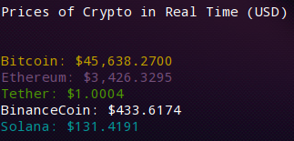

What is this?
AI Virtual Assistant
JBot Virtual Assistant Logo
weather_inp = ["Weather", "weather", "WEATHER", "weather?"]
joke_inp = ["Joke", "joke", "JOKE", "jokes", "Jokes", "laugh", "Laugh"]
google_inp = ["Google", "google", "search", "SEARCH", "Search"]
time_inp = ["Time", "time", "TIME", "time?", "Time?"]
date_inp = ["Date", "date", "DATE", "date?", "Date?"]
flipcoin_inp = ["Flip", "flip"]
name_inp = ["name?", "name"]
age_inp = ["Age", "age", "age?", "Age?", "old?", "old"]
gender_inp = ["Gender", "gender", "Gender?", "gender?"]
passgen_inp = ["Password", "generate", "Generate", "password"]
quit_inp = ["quit", "QUIT", "Quit"]
stopwatch_inp = ["stopwatch", "Stopwatch"]
creator_inp = ["created", "Created"]
JBot_inp = ["JBot", "jbot", "Jbot", "jBot"]
ethnicity_inp = ["From", "from"]
me_inp = ["beepboopblap"]
feeling_inp = ["How", "how"]
love_inp = ["love", "Love"]
who_inp = ["who", "Who"]
email_inp = ["Email", "Gmail", "gmail", "email", "mail"]
call_inp = ["Call", "call"]
rps_inp = ["rps"]
nothing_inp = ["nothing", "Nothing", "NOTHING"]
version_inp = ["--version"]
What can JBot do for you today?: Tell me about the weather this morning.
weather_inp list and run the weather function
if user_input == "What's the weather like today?":
print(weather_info)
while assistant:
user_inp = input(colored("What can JBot do for you today?: ", "green"))
user_inp = user_inp.split()
for i in user_inp:
if i in weather_input:
print(weather_info)
for loop to iterate through the user input and see if it matches with any of the keywords in the keyword list
if statement for the keyword will be activated and run the specific command
Platform game (Pygame)

if player_x >= 755:
level_2 = True
level_1 = False
player_y = 350
player_x = 20
if player_x <= -10:
player_x = -10
if statement to ask the code "is this player beyondor equal this x and y coordinates?
if event.key == ord("w"):
player_y = player_y - 40
if event.key == ord("s"):
player_y = player_y + 40
if event.key == ord("a"):
player_x = player_x - 40
if event.key == ord("d"):
player_x = player_x + 40
if event.key == ord("w"):
player_y = player_y - 40
Crypto price Checker

from bs4 import BeautifulSoup
from termcolor import colored
import requests
BeautifulSoup and requests. You may install bs4 using pip install bs4 in the terminal.
bitcoin_url = 'https://markets.businessinsider.com/currencies/btc-usd'
bitcoin_page = requests.get(bitcoin_url)
bitcoin_soup = BeautifulSoup(bitcoin_page.content, "html.parser")
requests.get and then parsering it with BeautifulSoup
bitcoin = bitcoin_soup.find('span', class_="price-section__current-value")
bitcoin = str(bitcoin)
bitcoin = bitcoin.replace('<span class="price-section__current-value">', "")
bitcoin = bitcoin.replace("</span>", "")
bitcoin and the price will update everytime I run the code.